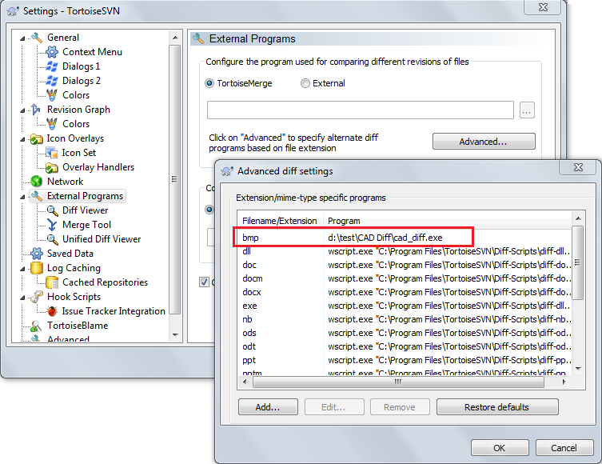

CAD diff - visual comparison for CAD files
"CAD diff" is a freeware Windows utility for CAD documents visual comparison.

Download
CAD Diff version, 5 MB zip for Windows, v1.4, release date 06.12.16
Link: cad_diff_v1_4.zip
Supported file formats
Internal support for common image formats like BMP, GIF, PNG, PSD, SVG etc.
If you have the MS Visio installed on your computer, you can use the CAD Diff for comparison of MS Visio VSD files, DWG and DXF drawings.
If you have the KOMPAS Graphic installed you can use the CAD Diff for comparison of CDW drawings
Usage
Command line usage:
cad_diff.exe OldFile NewFileUsage example:
cad_diff.exe my_draft.vsd fixed.vsdcad_diff.exe "d:\docs\1.svg" "d:\docs\2.svg"
Using with version control clients
If you have a "Version Control for engineers" installed, you don't need to use the CAD Diff - VCE already have the equal image diff functions.
You can easily integrate the CAD Diff to you preferable SVN, GIT, Fossil, Mercurial etc. client.
Here is an example for TortoiseSVN:

Here is an example for SmartGit:

Release history
| Version | Date | What's new |
|---|---|---|
| 1.4 | 06 dec 2016 | + KOMPAS Graphic CDW support. |
| 1.3 | 25 may 2016 | + Trim operation for image edges erasing. |
| 1.2 | 18 may 2016 | + Dual file select dialog (if no command line provided) |
| 1.1 | 25 Apr 2016 | + Support for related paths to compared files |
| 1.0 | 19 Apr 2016 | First release |